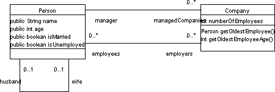
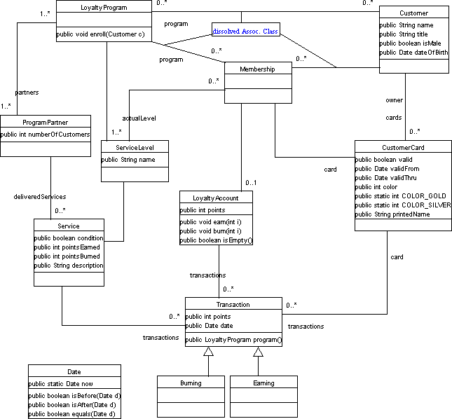

The demo application visualizes abstract syntax trees generated by the parser, and shows type information for the nodes found during type checking. The latter requires model information, so type checking is restrained to the UML models displayed below unless configured otherwise on the tab "Model".
The tree view of the abstract syntax tree allows to hide or show subtrees by double-clicking nodes.
Please note that this demo application is only a side product of the project. The compiler is intended to be used in CASE tools and allows flexible reuse of its components. The demo application is originally a tool to examine the compiler modules.
If you want to use the demo application, see the download page. The application allows clipboard access to copy constraints and can load XMI files from the local file system.
Person/Company Model
Royals and Loyals ModelThis model is taken (with some modifications) from the book "The Object Constraint Language: Precise Modeling With UML" by J. Warmer and A. Kleppe.
